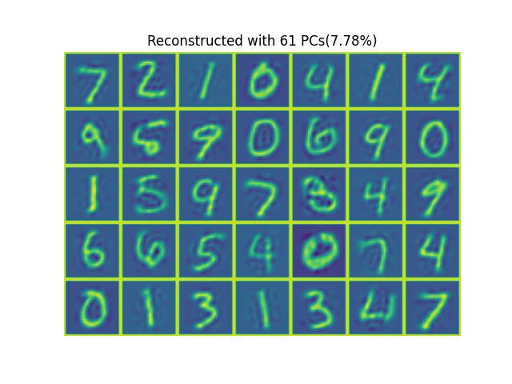
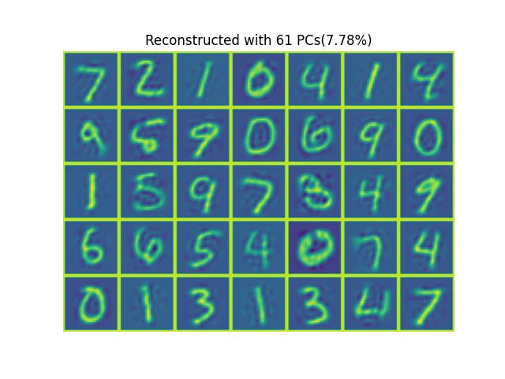

torchbox.ml package
Submodules
torchbox.ml.reduction_pca module
- torchbox.ml.reduction_pca.pca(x, dimn=0, ncmpnts='auto99%', algo='svd')
Principal Component Analysis (pca) on raw data
- Parameters
- Returns
U, S, K (if
ncmpntsis integer)- Return type
tensor
Examples
 

The results shown in the above figure can be obtained by the following codes.
import torch as th import torchbox as tb rootdir, dataset = '/mnt/d/DataSets/oi/dgi/mnist/official/', 'test' x, _ = tb.read_mnist(rootdir=rootdir, dataset=dataset, fmt='ubyte') print(x.shape) N, M2, _ = x.shape x = x.to(th.float32) u, s, k = tb.pca(x, dimn=0, ncmpnts='auto90%', algo='svd') print(u.shape, s.shape, k) u = u[:, :k] y = x.reshape(N, -1) @ u # N-k z = y @ u.T.conj() z = z.reshape(N, M2, M2) print(tb.nmse(x, z, dim=(1, 2))) xp = th.nn.functional.pad(x[:35], (1, 1, 1, 1, 0, 0), 'constant', 255) zp = th.nn.functional.pad(z[:35], (1, 1, 1, 1, 0, 0), 'constant', 255) plt = tb.imshow(tb.patch2tensor(xp, (5*(M2+2), 7*(M2+2)), dim=(1, 2)), titles=['Orignal']) plt = tb.imshow(tb.patch2tensor(zp, (5*(M2+2), 7*(M2+2)), dim=(1, 2)), titles=['Reconstructed' + '(90%)']) u, s, k = tb.pca(x, dimn=0, ncmpnts='auto0.7', algo='svd') print(u.shape, s.shape, k) u = u[:, :k] y = x.reshape(N, -1) @ u # N-k z = y @ u.T.conj() z = z.reshape(N, M2, M2) print(tb.nmse(x, z, dim=(1, 2))) zp = th.nn.functional.pad(z[:35], (1, 1, 1, 1, 0, 0), 'constant', 255) plt = tb.imshow(tb.patch2tensor(zp, (5*(M2+2), 7*(M2+2)), dim=(1, 2)), titles=['Reconstructed' + '(70%)']) plt.show() u, s = tb.pca(x, dimn=0, ncmpnts=2, algo='svd') print(u.shape, s.shape) y = x.reshape(N, -1) @ u # N-k z = y @ u.T.conj() z = z.reshape(N, M2, M2) print(tb.nmse(x, z, dim=(1, 2)))
{kind=link}
{kind=link}